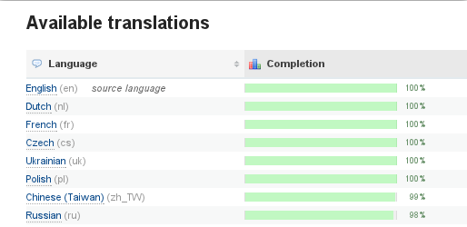

For the most up-to-date information, please refer to Transifex.com and support.transifex.com.
Transifex version 1.1 (Sabretooth)¶
Welcome to Transifex 1.1, codenamed Sabretooth!
- Released:
- June 2011
Transifex 1.1 ‘Sabretooth‘ is a new major release. Transifex 1.0 ‘Proteus’ brought a number of big changes. This release introduces a ton of improvements and bugfixes and a small number of yet important new features.
Here’s the gist:
- High performance and speed, even for huge projects with hundred of thousands of translations
- Support for Java properties and Joomla INI files
- A richer and more robust Application Programmable Interface
- Transifex Client v0.5
- Fuzzy matching of source strings when updating source language files (translation memory)
- Ability for projects to link to L10n instructions page
- Support for language codes alongside language-country codes
400 changesets recorded
415 files changed, 76407 insertions(+), 48711 deletions(-)
Sabretooth – As seen on the cover of X-men vol. 2. Art by Salvador Larroca.
What’s new in Transifex 1.1¶
Improved Performance¶
A much wanted improvement comes in the form of denormalized statistics. Transifex 1.1 boosts performance between 4x-10x on various pages on the interface, especially the ones showing statistics, which should now load in milliseconds.
The various statistics for each resource or release are available in real time, no matter how large your project is. Together with smarter statistics update algorithms, the performance gain should be obvious.

Native support for Joomla INI and Java .property files¶
Joomla extensions and themes are managed using special INI files, which can now be loaded in Transifex and handled natively. This means that these resources behave exactly like any other, with full support of all features, including the web-based editor, Transifex client, etc. No need to convert to PO or another intermediate format.
Additionally, Java .property files are now supported natively as well.
Just create a new resource by uploading the INI or .property file and a resource should be created right away. Support or even more file formats is on the way.
Fussy re-using of existing strings in source language files¶
A new feature that was added in this version is the fuzzy matching of source strings when importing new source files. This enables Transifex to identify similar source strings and use the existing translations as suggestions for newly added source strings. This is especially useful when updating the source strings of a resource and most of the changes are minor corrections since you can still use your existing translations with minor tweaking.
The similarity threshold is configurable in the settings files, although we expect most projects to keep the default value.
Integration of L10n instructions URL in the project details page¶
Another new feature that the new Transifex version offers is the ability to define a URL containing L10n instructions for a project. This will be linked from the Project Details page and can include documentation for translators, packagers, other developers etc. Useful to link against wiki pages of a project.
Support for language codes alongside language-country codes¶
Several languages available in Transifex with aliases pointing to countries, as for example ‘es’ pointing to ‘es_ES’ now were split into two different languages. It allows the projects registered on Transifex to choose whenever they want to use only general language code (‘es’) or language code plus country info (‘es_ES’), depending on the code style used by the system.
Application Programming Interface version 2¶
The new revised API is a simpler, more elegant and more consistent version of the Transifex API.
The most important feature is the merge between the StorageHandler, the ProjectResourceHandler and the ResourceHandler into one unified ResourceHandler. This gives you the ability to create a resource and push its content with a single request. Furthermore, the Translation Handler now also accepts json-encoded strings, empowering you to send the translations along with other information in one request.
The URLs of the new API are under /api/2 while the old API still resides in /api. The old API can also be accessed under /api/1. This way full backwards compatibility is ensured.
More technical details at Version 2 API docs.
Transifex Client-0.5¶
Note
Main article at Transifex Client-0.5
Parallel to the release of Transifex-1.1, the release of the Transifex client v0.5 took place. The gist of the new introduced features is:
New features¶
- Introduced local language mappings, allowing the push of arbitrary local files (eg. custom language codes) to remote, canonical languages (and also pulling) (added in version 0.5.1).
- The client can now pull the file with the translation in the source language as well with tx pull --source.
- You can now specify the --skip option for the pull command so that the client does not stop on errors. This is useful when you want to pull many files from the server.
- The client uses now the HTTPS protocol by default for increased security.
Enhancements¶
- Entries in configuration files are now sorted alphabetically. This way they don’t change often, and when they do, they produce smaller diffs.
- The client now skips translations which have never been updated.
- The client is now more Windows-friendly.
- Support for Python stable release 2.4.
- Numerous bug fixes.
Enhancements¶
- Added CSRF protection to all POST requests throughout Transifex using Django 1.2 csrf support
- Updated txmigratemap command to add autofetch URL info, in the corresponding resource.
- Added API calls for auto remote project initialization from transifex-client.
- Last updated timestamps are only updated when a translation is added/removed for a specific language.
- Updated the source edit form with the following: Source language cannot be changed. Source file uploads are enabled.
- Improved the checks for invalid PO files.
- Added migrated=True to the migrate map app which will allow you to run the migration from 0.9 to 1.0 in steps.
- Files can now be downloaded by their language code aliases as well
- Transifex now makes different msgfmt checks for POT and PO files
- Optimized some queries that took a lot of time.
- Updated translation files.
- Maintainers can now push translations even when resource has accept_translations set to False
- Throttling in now configurable in the settings.
- Lotte now checks translations for common errors and reports them to the translator.
- Improved managers for getting private projects/resources per user.
- Improved release views/templates to take into account private resources as well.
- A lot of languages were added and some of the existing ones were updated with correct plural rules/equations.
- Split Languages into general languages and languages + country
- When editing a team it’s possible to change the language to a language related to the previous one, such as from ‘pt’ to ‘pt_PT’ or vice versa.
- Languages added: Belarusian (Tarask) (be@tarask), sr_SR@Latin ** NOT COMPLETE
- Languages updated: Russian (Russia) (ru_RU), ca@valencia, ‘ga’, ‘b s’, ‘hr’, ‘sr’, ‘uk’ and similars, such as ‘sr_RS’, for example. ** NOT COMPLETE
- Modified watches so if the source language is changed all languages are notified.
- Added support for developer comments in Qt Linguist files.
- Updated jquery dataTables to a newer version.
- The autofetch URL addon now accepts all URL formats that point to a valid translation file.
- Transifex has been updated to fully support Django-1.2.4 and Django-1.2.5.
- Updated test suites for all Transifex applications.
- Added support for empty numerus forms in TS files.
- Lock information is now presented in stats table rows
- ‘Translate Now’ button is disabled for locked resources/languages.
- Added escaping to xml special characters on import/export for Qt files. (Now lotte is a WYSIWYG editor)
- Save & exit button now emulates translation sessions
- Developer comments are now displayed in the source entity details box.
- Updated fancybox to v1.3.4
- Updated requirements.txt which is used by PIP
- Updated favicon
- Added south migration to remove deprecated tables from pre1.0 Transifex.
- All data migrations now use south’s orm
- More languages are now available for Transifex
- All unsaved entries are now saved when a page is changed in lotte.
- Transifex now offers a “Remember me” option in the login form.
- Use project and resource slug in downloaded translation files.
- Timeline is now available for all logged in users.
- User messages now use the new Django messages framework.
- Source language is always on top in the statistic tables.
- Txmigratemap now stores the URL of the source file in the Resource model.
Bug Fixes¶
A number of important bug-fixes have been incorporated into this release as well. Many thanks go to our vibrant community for helping us point out and implement them. Following is an overview of the fixes the Transifex 1.1 release incorporates:
- Fixed a bug in jsonmap migrations under MySQL
- Fixed JSONMap slug field MySQL problem
- Fixed some issues with extended unicode characters in source strings
- Fixed a problem with Languages containing unicode characters in their name.
- Fixed a unicode issue in PO file metadata.
- Fixed auto-suggest and copy source actions for pluralized translation rows in Lotte.
- Removed unused dependency (Urlgrabber)
- Translation unique hashes are now calculated from the concatenation of the translation string and the context.
- Improved permissions checks and fixed some permission issues.
- Private teams are no longer visible in the user’s public profile.
- Fixed encoding error with charts addon.
- Char overflow for resource slug from the API has been fixed.
- Fixed encode error with localized exception messages.
- Fixed feeds not printing correct chars.
- Fixed a bug which broke the default ordering of plurals in Qt, PO files
- Fixed a bug with PO files using logical ids.
- Fixed URL misleading what was resulting on 404 errors The issue was related to some slugs ending with ‘p’ that were mismatching the /p/ on the URLS. Includes of URLS should always have ^ in the beginning. So p/ as changed to ^p/ to avoid such problems.
- Fixed Lotte auto-save for plural fields Now whenever the auto-save is enabled, a plural entry will only be pushed whether all or None of the plural textareas where filled in, when the entry is modified, of cource.
- Changed Ajax resource action page URL to avoid cross-subdomain problems
- Fixed watches Ajax URLs to avoid cross-subdomain problems
- Uploading a new source file to Transifex now updates all the source entity fields with the new values (which means you can convert a non-pluralized source entity to a pluralized one etc)
- PO-Revision-Date now has the last update time of the language, not now().
- Fixed duplication of received email for some notifications.
- Obsolete entries are not imported in the Db.
- Fixed an issue with lotte and backslashed (‘n’ and ‘\n’ were treated the same).
Getting Transifex 1.1¶
You can experience Transifex live at http://www.transifex.com/. This upstream instance is hosted by Transifex, the company behind the development of Transifex.
Project and community managers who want to deploy Transifex for their own community may refer to the Installation documentation.
Upgrading to this version¶
To upgrade the code, update your package distribution as usual:
- If you installed from your package distribution, check if there’s been a package upgrade and go for it.
- If you used easy_install, run easy_install -U to upgrade.
- Fresh tarballs are available, if you installed from a release zipfile.
- Finally, if you’re of the daredevil kind and feed straight from the source, git pull should do the trick for you.
Dependencies¶
The following extra dependencies was added since the last major version:
- django-haystack >= 1.2
- pysolr
One dependency is no longer required starting from this version:
- urlgrabber
Instructions on how to install the dependencies can be found at the Installation docs. You’ll need to complete this step before actually doing the database migration.
Migration¶
Transifex 1.1 has undergone some changes in its database schema. However it’s very easy to migrate to the new database using the python commands included in the main directory. To do this, you need to run:
python manage.py syncdb --noinput
python manage.py migrate --ignore-ghost-migrations --noinput
Then, you only need to create new notice types and new languages by executing the following commands:
python manage.py txcreatenoticetypes
python manage.py txlanguages
Also, our new extra-powerful RLStats feature needs to be initialized with the following command:
python manage.py txstatsupdate
Note
Depending on the size of the database and the number or projects and resources that you have, this process may take up to several hours.
Sample Migration¶
A sample run for a migration from Transifex version 01.1 to Transifex 1.1 follows (all stdout/sterr output are omitted):
git clone git@github.com:transifex/transifex.git
git checkout 1.1
python manage.py syncdb --noinput
python manage.py migrate --ignore-ghost-migrations --noinput
python manage.py txcreatenoticetypes
python manage.py txlanguages
python manage.py txstatsupdate
Contributors¶
The following people have contributed to this release, with one way or another:
- Andreas Loupasakis
- Antonios Garnelis
- Apostolos Bessas
- Diego Búrigo Zacarão
- Dimitris Glezos
- Konstantinos Bairaktaris
- Michał Sawicz
- Ratnadeep Debnath
- Seraphim Mellos
- timeless
For a list of our awesome translators, refer to the `Translations`_ section.
Transifex 1.1 Development Releases¶
- Alpha: 5 May 2011
- Beta: 15 May 2011
- Final: 4 July 2011
Please refer to the full `Transifex 1.1 changelog`_ for more information on what has changed between the development releases and final one.
Note
Why the name ‘Sabretooth’?
Sabretooth (Victor Creed) is a fictional character, a Marvel Comics supervillain. The character first appeared in Iron Fist #14 (August 1977). Originally portrayed as a non-powered serial killer, Sabretooth is later written as a mutant who possesses bestial superhuman abilities, most notably a rapid healing factor, razor-sharp fangs and claws, and superhuman senses. He is a vicious assassin responsible for numerous deaths both as a paid mercenary and for his personal pleasure.
Sabretooth has appeared in several X-Men animated series, movies and video games, just like all the codenames of our releases. The character Wolverine is depicted as his long-time enemy.
All the above match perfectly with the characteristics of Transifex 1.1 ifself. The best is yet to come.
The above information is taken from wikipedia (Sabretooth)
Next Section: Transifex version 1.0 (Proteus) »